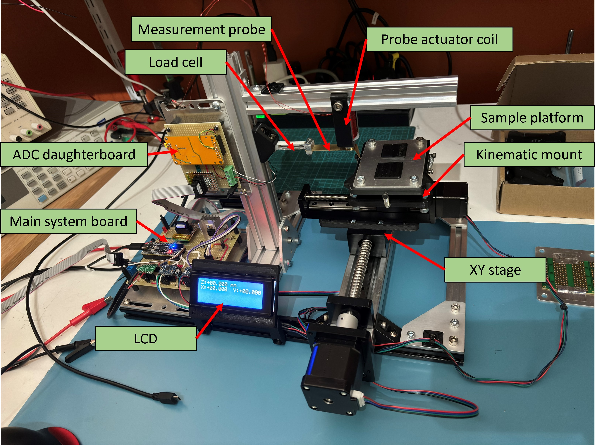
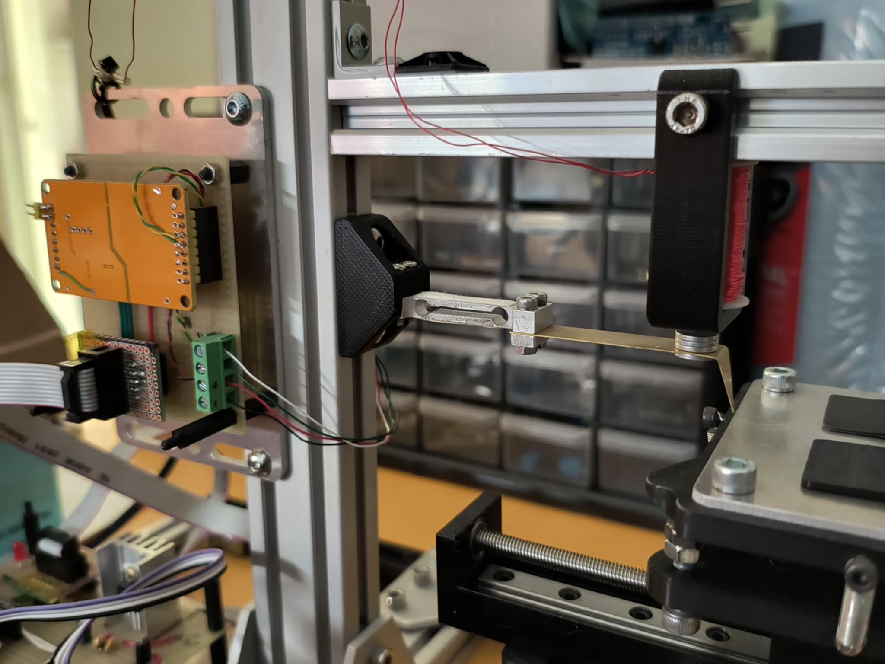
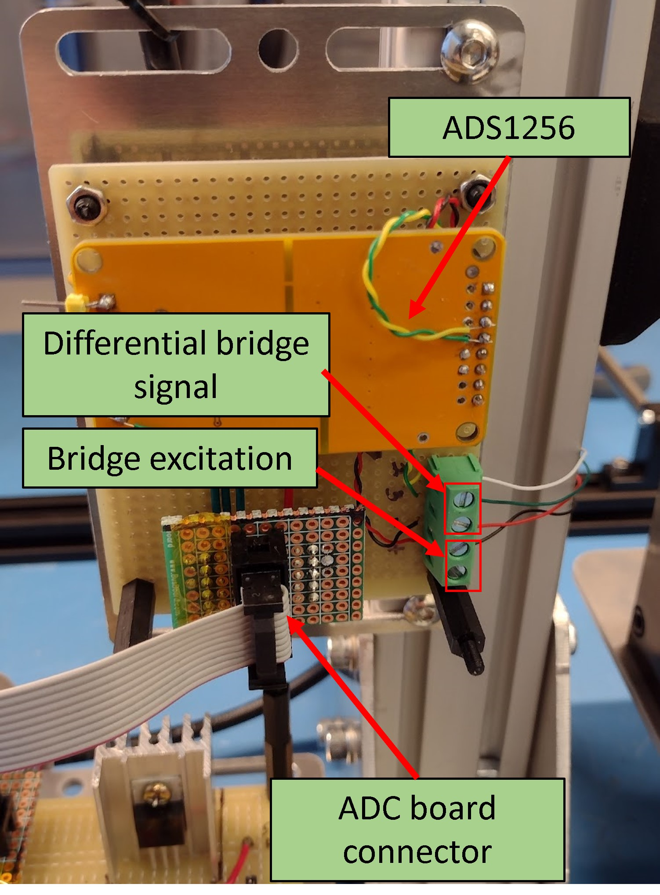
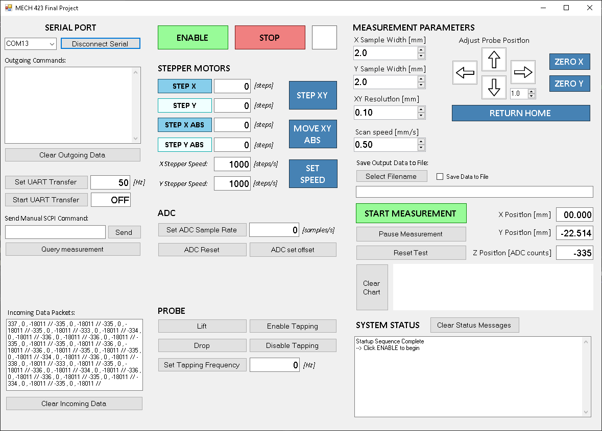
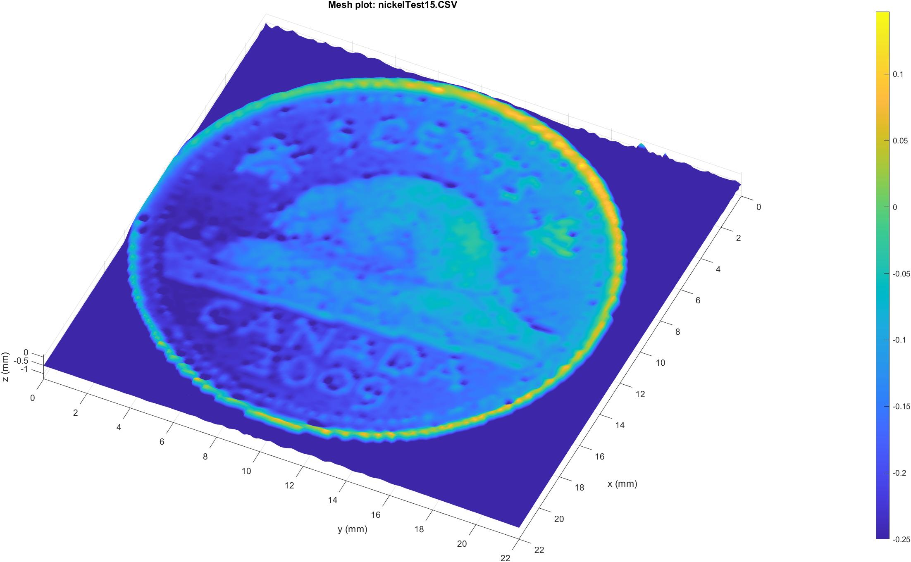
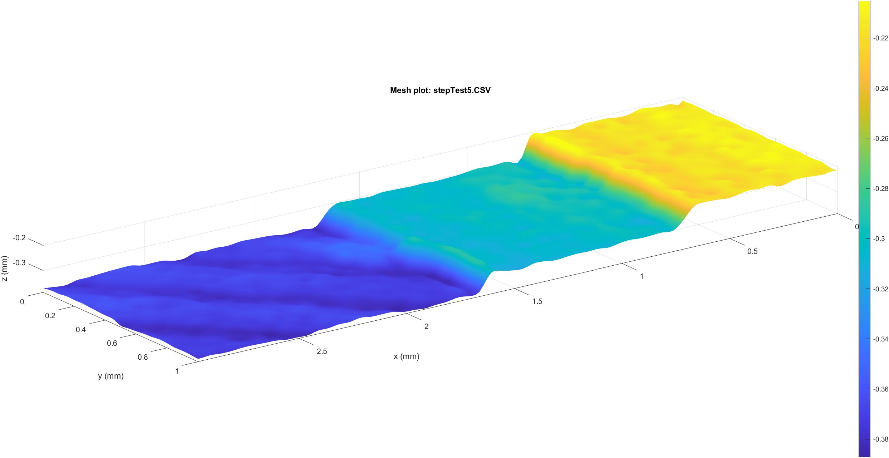

Macroscope

A constant-height, contact mode atomic force microscope/profilometer.
Github repository (contains firmware and schematics) here:
https://github.com/jarofmolasses/macroscope
With partner: David Antoniuk

This was our final project for MECH 423, a course at UBC.
It is intended to be a simple demonstration of the atomic force microscopy principle, using a pair of linear motion stages to scan a flexible measurement probe
across a test sample. The local height of the sample deflects the probe, and the probe deflection is
measured using a load cell. Our target resolution was a voxel size of 50 micron.
A voice coil lifts and drops the probe, and in the future could in principle allow for a "tapping mode"
measurement where the tip oscillates allowing for less destructive tip-sample interaction.
In this project, I primarily handled the electronics half of the design.

The probe is mounted as a cantilever beam on the end of the load cell.
It is cut from a sheet of brass and is tuned to give a static deflection of 50 micron per centinewton.
There is a tradeoff here: a higher stiffness cantilever will ultimately give a higher spatial resolution,
but the tip-sample interaction force will be higher.
A small stack of magnets at the end of the probe allow the probe to be raised and lowered by the voice coil mounted above it.

The load cell signal is received by a 24-bit ADC (ADS1256). The ADC board is mounted close to the load cell,
to limit induced noise from long load cell wiring. The ADC is on a commercially available
breakout board, which is modified to allow for a ratiometric configuration of the load cell and ADC.
The ADS1256 includes a comprehensive analog front-end built in, and the noise performance is good enough for reaching our target 50 micron resolution.

The controller board hosts the rest of the electronics - the microcontroller,
the reference voltage for the ADC and load cell, and the motor drivers.

The system is programmable using a set of SCPI-like commands, and it can be controlled by manually writing commands in a serial terminal or by using a companion GUI.
Github repository: https://github.com/JarofMolasses/macroscope_control
Results
Scan of a 5c coin with 88x88 XY resolution.

Scan of a small 3d printed test sample with 0.1mm steps. The diagonal striations on the bottom step are the print lines.
We were able to get some pretty nice scans out of this simple setup. Pending a proper analysis and calibration, a conservative estimate of the minimum Z-height resolution is 0.01mm. In X and Y the minimum resolution is limited by the radius of the tip at around 0.05mm.
The scanning process is slow, primarily because the stepper stages need time to settle before each measurement is taken. This could be improved using smoother stepper acuation (perhaps a Trinamic driver) or using a different, "quieter" actuator (such as a voice coil).